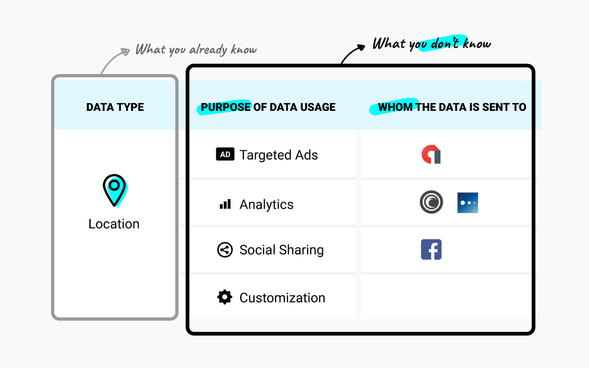
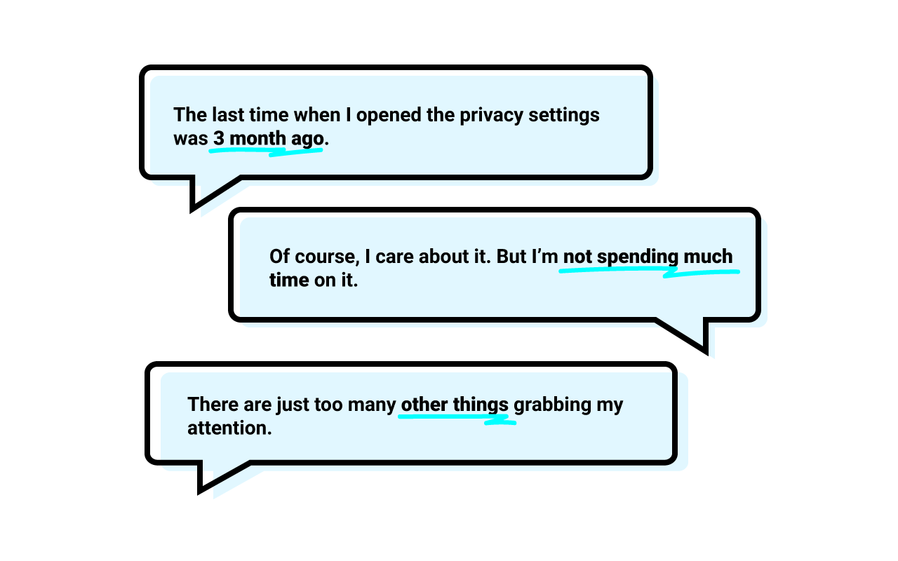
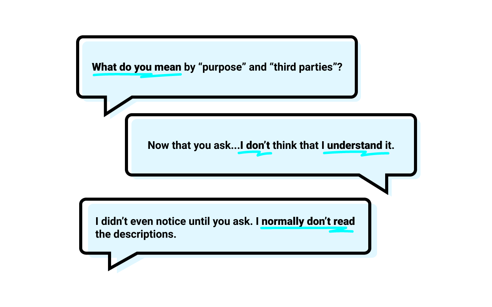

Project Background
To envision a powerful yet effortless privacy managing experience for Android users.
Data security has become a heated topic recently. With the various data collected via ubiquitous computing, our privacy data has been getting more and more fragile. Collaborating with DARPA, CMU CHIMP LAB is now proposing a new way of privacy management to Google, aiming at giving Android users more controls over their privacy data.
The current Android OS only tells you:
- Data types that have been collected by the apps (e.g. location or camera)
But, with the new data model, it will also tell you:
- Purposes that the data are collected for (e.g. for advertisment)
- Third-parties that the data have been sent to (e.g. libraries like flurry)
With the advanced features we are introducing to the users, the design became challenging since we need to wrap the unprecedented power of control in an understandable and manageable way.
So the problem statement for this project is: how can we leverage the advanced features but still keep the design simple?
Getting Started
Before starting the design process, I did a bunch of user testing with 5 mobile users. The important findings from the testing and interviews largely shaped the design direction of the project.
▸ Insight 1
Data privacy is not a primary task.
It is a sure thing that people want their privacy data to be secured. However, given the millions of other things that are also grabbing people’s attention, data privacy became a much smaller deal in reality than in our imagination.
▸ Insight 2
“Purpose” and “third-parties” are still vague concepts.
Although I’d like to assume that users would find privacy settings by purpose and third-parties helpful, the test results showed that I was wrong. All 5 users were confused by the idea of “purpose” and “third-parties” and ignored the options under the 2 concepts completely in the testing.
Early Iterations
The initial focus was on improving the in-app experience.
Based on the initial research findings, I listed three main use cases that the app should be designed to serve. The use cases are:
- How can users change a permission setting for an app that I just used?
- How can users stop an app from collecting my location data for ads?
- How can users stop a group of social apps from collecting their contact info?
And to optimize the design specifically for those three use cases, I set up three design decisions for the initial iteration:
- improve the visual hierarchy
- speed up the common use cases
- use metaphor to explain the concepts